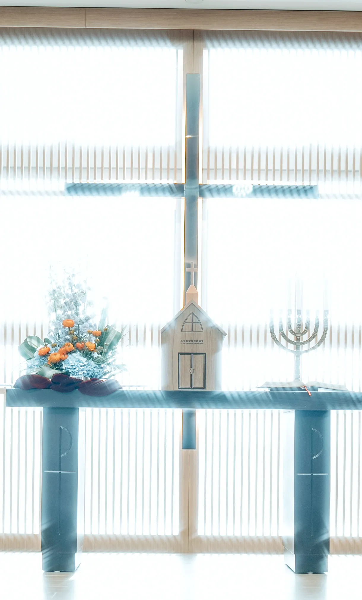
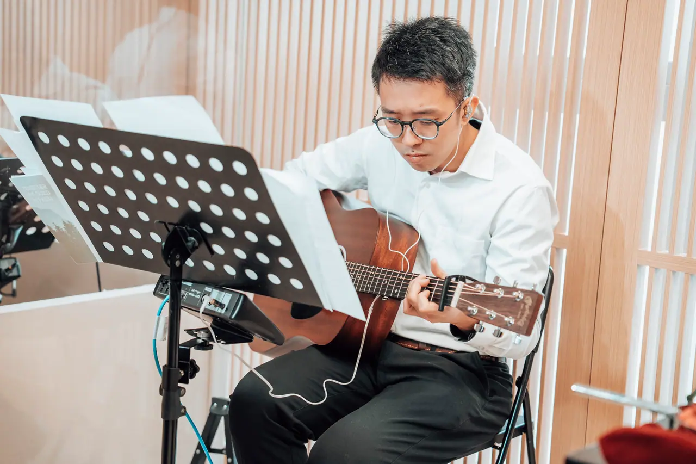
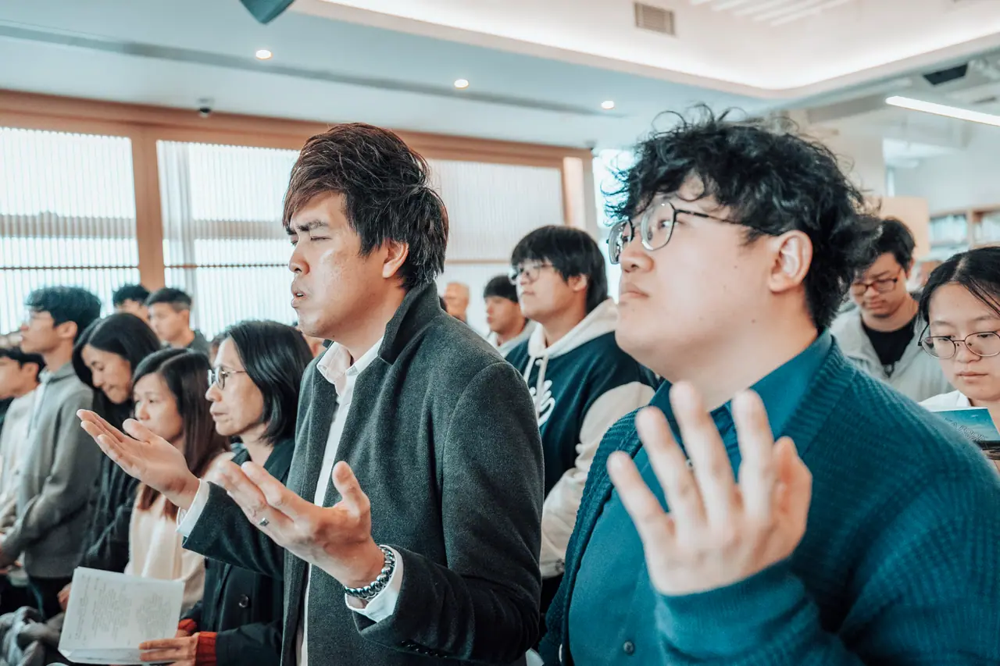
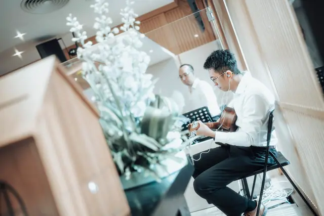
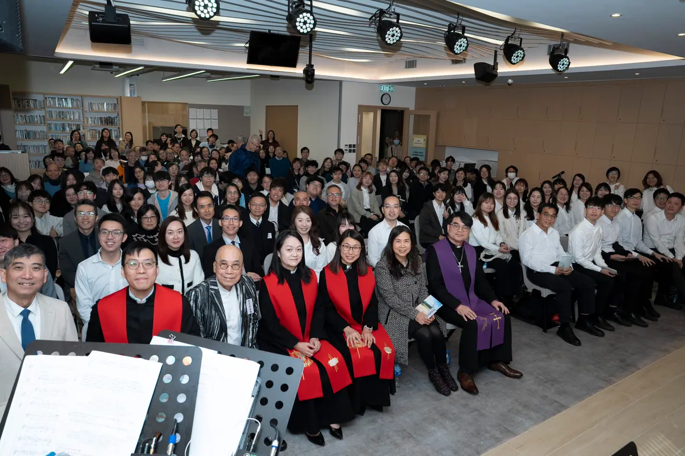
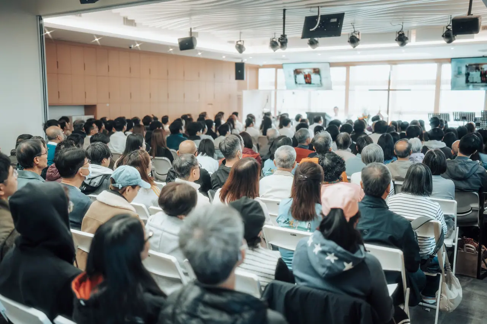

五旬節聖潔會迦福堂於 1968 年成立，2002 年遷入觀塘。今天，我們在電訊一代廣場的新堂一同敬拜、彼此服事，也期待與你相遇。
無論你是第一次踏進教會，還是正在尋找屬靈的家，都歡迎你來。你可以安靜坐下、一同唱詩，按自己的步伐認識信仰。
歡迎弟兄姊妹與新朋友一同敬拜。
在詩歌與真道中，一起親近神。
對象為中學及大專學生。
為教會、肢體與社區同心祈禱。
招待同工會帶你入座，也可以為你介紹教會。
一同唱詩、禱告和聆聽聖經，不用擔心不熟悉流程。
團契和小組讓你在學生、職場、家庭或長者的階段，都有同行的人。



一同參與週六、週日崇拜與週三祈禱會，在敬拜中親近神。
以諾團、安得烈團、少年團等多元團契，在生命的每個階段彼此同行。
參閱教會公開代禱事項，並了解週三祈禱會安排。

教會於1968年成立，過去曾服事慈雲山及九龍城，2002年遷入觀塘。現時堂址為成業街10號電訊一代廣場23樓A室。
第四季合堂崇拜於教會禮堂及副堂舉行；10月4日早堂及10月3日（週六）青少年崇拜取消。
香港五旬節聖潔會禱告禁食日，主題為「感動．敢動」，集體祈禱會地點為教會禮堂。歡迎弟兄姊妹同心禱告。

帶著你的問題、你的故事，或只是想安靜一會兒。我們期待在迦福堂與你相遇。